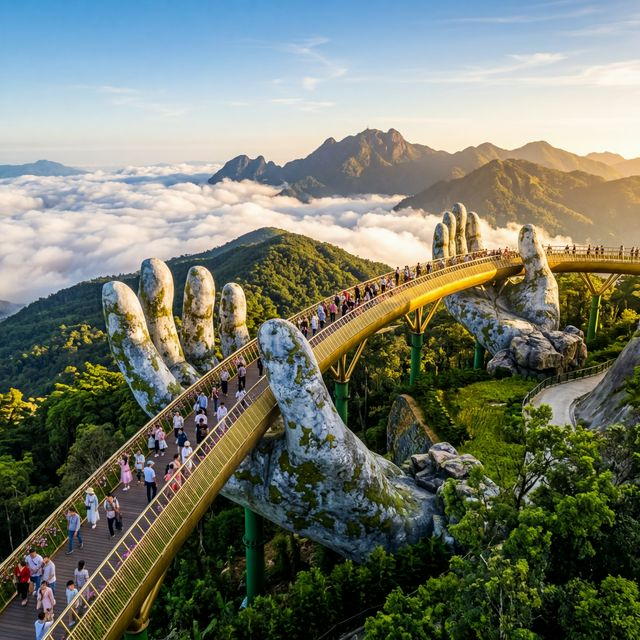
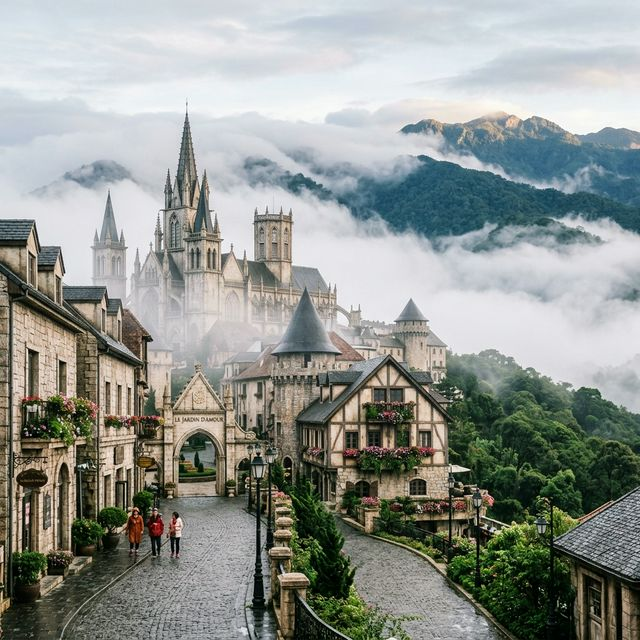
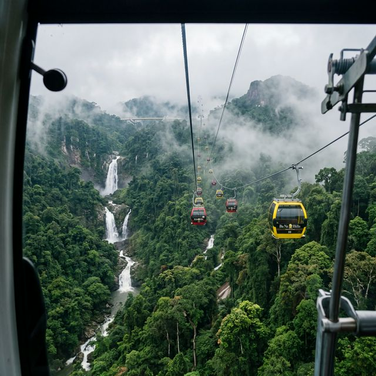

오늘 다낭 시내 기온은 최고 32도까지 올라가는 완연한 여름 날씨입니다. 하지만 바나힐로 올라가시면 이야기가 달라집니다. 해발 고도가 높기 때문에 시내보다 약 5~8도 정도 낮습니다. 오늘 오전 9시 기준 정상 기온은 약 22도 내외로 쾌적하지만, 바람이 불거나 안개가 낄 경우 체감 온도가 뚝 떨어질 수 있으니 얇은 겉옷은 선택이 아닌 필수입니다.
특히 3월은 다낭의 건기(2월~8월)에 속해 비 걱정은 덜하셔도 되지만, 산 정상 특유의 '운무' 현상은 자주 발생합니다. 오늘 오후 3시 이후에는 잠시 가랑비나 짙은 안개 예보가 있으니, 멋진 뷰를 감상하려면 무조건 오전 첫 차(7:00~8:00) 케이블카를 타고 올라가시는 것을 강력 추천합니다.
거대한 바위 손이 금색 다리를 받치고 있는 '골든브릿지'는 이제 전 세계적인 인스타그램 성지가 되었습니다. 하지만 주말인 오늘 같은 날은 사람 반, 공기 반일 가능성이 높습니다.
명당 포토 스팟 꿀팁: 다리 초입보다는 중앙에서 끝부분으로 가실수록 사람이 적어집니다. 다리의 '엄지손가락' 옆에서 인물을 배치하고 하늘과 구름을 광각으로 담으면 훨씬 웅장한 사진을 얻을 수 있습니다. 만약 안개가 너무 짙다면 실망하지 마세요. 안개 속의 골든브릿지는 마치 신선들이 노니는 천상계 같은 몽환적인 분위기를 연출해 줍니다.

케이블카를 타고 더 위로 올라가면 나타나는 프랑스 마을은 프랑스 식민 시절 휴양지로 개발된 역사를 간직하고 있습니다. 현재는 현대적인 호텔과 레스토랑이 들어선 테마파크 형태지만, 건축물들의 디테일은 상당히 훌륭합니다.
로마네스크 양식의 성당 앞 광장은 메인 거리로 항상 북적입니다. 고요한 분위기를 원하신다면 메인 광장에서 조금 벗어난 골목 안쪽의 와인 셀러(Debay Wine Cellar)나 사찰 구역(Linh Ung Pagoda)을 방문해 보세요. 유러피안 감성과 베트남 전통 불교 문화가 한 공간에 공존하는 독특한 풍경을 만날 수 있습니다.
바나힐로 가는 유일한 방법은 케이블카입니다. 한때 세계 최장 길이로 기네스북에 올랐던 바나힐 케이블카는 울창한 원시림과 거대한 폭포 위를 지나갑니다. 올라가는 동안 발밑으로 보이는 폭포수와 절벽의 절경은 그 자체로 하나의 액티비티입니다.
| 구분 | 입장권 (케이블카 포함) | 뷔페 포함 패키지 |
|---|---|---|
| 성인 (140cm 이상) | 약 950,000 VND | 약 1,250,000 VND |
| 소인 (100~140cm) | 약 750,000 VND | 약 950,000 VND |
| 유아 (100cm 미만) | 무료 | 무료 |

아이와 함께 방문하셨다면 지하에 위치한 판타지 파크(Fantasy Park)를 빼놓을 수 없습니다. 쥬라기 파크, 범퍼카, 3D/4D 영화 상영관 등 다양한 놀이 기구가 구비되어 있으며 실내라 비가 오거나 안개가 심할 때 대피하기 아주 좋습니다.
액티비티 애호가라면 알파인 코스터(Alpine Coaster)를 강력 추천합니다. 수동 브레이크를 이용해 레일 위를 달리는 루지와 유사한 기구인데, 산비탈을 타고 내려가며 만나는 풍경이 압권입니다. 다만 인기가 많아 대기 시간이 60분 이상 될 수 있으니, 올라오자마자 이쪽으로 바로 향하는 동선을 짜는 것이 유리합니다.
바나힐은 다당 시내에서 차로 약 40분 정도 떨어져 있습니다. 솔직히 자유여행객이라면 그랩(Grab)이나 렌터카 왕복 서비스를 예약하는 것이 가장 편합니다. 가격은 왕복 기준으로 약 40만~50만 동 정도면 합리적입니다. 최근에는 다낭 시내 주요 호텔에서 운영하는 무료 또는 저렴한 셔틀버스 서비스도 많으니 숙소에 미리 문의해 보세요.
먼저 골든브릿지를 본 뒤, 바로 프랑스 마을로 올라가 점심을 드세요. 오후에 다시 골든브릿지로 내려오면 단체 관광객이 빠져 한산할 수 있습니다.
정상 뷔페 레스토랑은 종류가 많지만 번잡합니다. 고즈넉한 식사를 원하신다면 프랑스 마을 내 단품 레스토랑이나 카페를 추천합니다.
바닥이 미끄러울 수 있으니 슬리퍼보다는 편한 운동화를 착용하시고, 화사한 원색의 옷이 사진에 훨씬 예쁘게 나옵니다.
다낭 여행에서 바나힐을 빼놓는다면 붕어빵에 팥이 빠진 것과 같습니다. 안개가 끼면 낀 대로, 맑으면 맑은 대로 각기 다른 매력을 뽐내는 이곳에서 여러분만의 특별한 추억을 만들어보세요. 3월의 쾌적한 날씨가 여러분의 여행을 더욱 빛나게 해줄 것입니다. 오늘 가이드가 여러분의 즐거운 다낭 여행에 활력소가 되길 바랍니다!